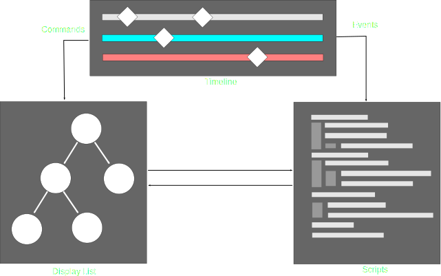
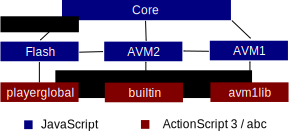

Видео игры в интернете
используя
Shumway, asm.js and WebGL
Юрий Делендик, Mozilla / @yurydelendik
http://people.mozilla.org/~ydelendik/presentations/games-devgamm.html
http://people.mozilla.org/~ydelendik/presentations/games.html (eng)
Mozilla Research
- Работаем над современными веб-технологиями.
- Пытаемся доказать, что открытые технологии обладают потенциально теми же возможностями что и закрытые.
Shumway
- Цель
- SWF формат
- Компоненты Shumway
- Использование
Цель
- Определить части платформы HTML5, которые необходимо улучшить
- Дать Flash разработчикам чувстваовать себя более комфортно с платформой, например предоставить библиотеки
- Разработать скоростную VM на JavaScript
- Создать поигрыватель SWF файлов используя HTML/JavaScript
- Встроить проигрыватель в Firefox
(и другие броузеры?)
SWF формат
- Двоичный формат
- Данные часто упакованы используя DEFLATE
- Содержит структуры, которые описывают временную последовательность, фигуры, звуки, и т.п.
- AVM1 и AVM2 код храниться в собственных форматах

Timeline
- ActionScript 1
- Основан на ECMAScript языке
- ActionScript 2
- Основан на ECMAScript 4
- Как ActionScript 1, исполняется на AVM1
- ActionScript 3
- Исполняется на AVM2
- Большая библиотека классов
- Поддержка E4X
Внутренности
Flash Player

Сравни c HTML5

Компоненты
- Ядро
- AVM2
- "Собственная" реализация Flash
- AVM1
Компоненты
Компоненты: Ядро
- Структурный анализ SWF
- Используются Typed Arrays / DataView
- Конвертирование в Web Worker
- Синронизация используя Promises/A+
Компоненты: Ядро
- Изображение
- CANVAS 2D (экспериментирем с WebGL)
- Отсечение и прорисовка только фигур в измененных регионах
- Дерево квадрантов для определения фигур в измененных регионах и позиции указателя
Отсечение


Компоненты: AVM2
- Структурный анализ машинного кода AVM2
- Среда выполнения
- Интерпретатор
- Вывод типов (Verifier)
- Компилятор в JavaScript
- Собственная реализация методов в builtin
Компоненты:
"Собственная"
реализация Flash
- JavaScript код для реализации "native" методов из playerglobal
- Используем Web APIs чтобы имитировать функции Flash, например:
- Web Audio или AUDIO для звука
- VIDEO для видео
Компоненты: AVM1
- Структурный анализ машинного кода AVM1
- Интерпретатор
- Используем AS3 код, чтобы реализовать AS1/AS2 классы
Дополнительныe
подпроекты
- ECMAScript for XML (E4X)
- RegExp
- Action Message Format (AMF)
- RTMP *
Производительность
Использование
- Как расширение к веб-броузеру
- Добавлять на страницу как IFRAME
- Продолжать писать код в ActionScript 3
- Использовать FLA/SWF как ресурс, писать на JavaScript
- Тестирование производительности
Демострация
Shumway
ASM.js
"Чрезвычайно оптимизируемое низкоуровневое подмножество JavaScript"
Простая программа
function DiagModule(stdlib) {
"use asm";
var sqrt = stdlib.Math.sqrt;
function square(x) {
x = +x;
return +(x*x);
}
function diag(x, y) {
x = +x;
y = +y;
return +sqrt(square(x) + square(y));
}
return { diag: diag };
}Почему это быстрее?
- Помогает JavaScript движку определять типы данных.
- Не управляет памятью JavaScript.
Надо ли мне это
писать самому?
function strlen(ptr) { // calculate length of C string
ptr = ptr|0;
var curr = 0;
curr = ptr;
while (MEM8[curr]|0 != 0) {
curr = (curr + 1)|0;
}
return (curr - ptr)|0;
}Компиляция
C/C++ => LLVM => Emscripten => JavaScript
- Emscripten может создавать asm.js код
- asm.js код будет работать во всех современных броузерах
- С asm.js оптимизацией скорость Firefox уже в среднем 2x скорости кода исполняемого напрямую на опрационной системе
Производительность
 Тестирование на мобильном устройствах показывает что asm.js лучше Dalvik VM и близко к "родному" коду.
Тестирование на мобильном устройствах показывает что asm.js лучше Dalvik VM и близко к "родному" коду.
Staring at the Sun:
Dalvik vs. ASM.js vs. Native
Демострация asm.js
(и WebGL)
Ссылки
The End
http://people.mozilla.com/~ydelendik/presentations/games-devgamm.html